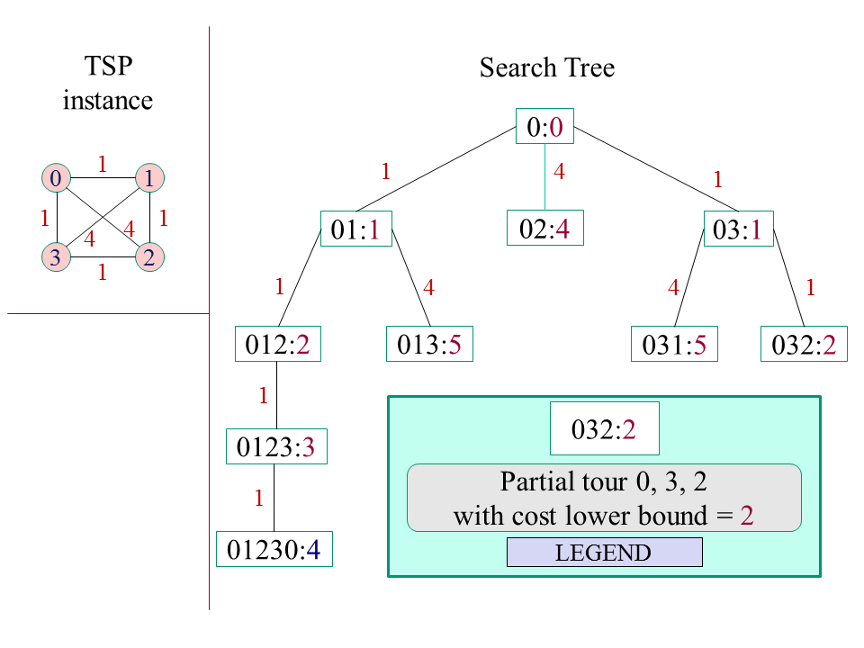

Assignment 5: A Distributed Branch & Bound Framework
Purpose
The purpose of this assignment is to:
- enhance your API & infrastructure to support branch-and-bound
- Compute performance measures T1 and T∞.
References on branch & bound
Specification: Branch & Bound Framework

Design & implement a framework for branch & bound (B&B) applications that can be applied to TSP (see below).
Design Document
Create a design document that :
- Briefly describes your design of the API and infrastructural enhancements described below;
- Identify essential design issues, and how your approach to them is manifested in your object-oriented design.
Shared object
Enable the application programmer to establish A shared object accessible to all tasks.
Sometimes you want all tasks to have access to a common set of data whose value can change during the course of the computation. In distributed computations where performance is a prime goal, it may be inappropriate to provide shared objects in the conventional sense. Here, we provide a weaker form of sharing that is compatible with high performance:
An object that is shared among all of a computation's unfinished tasks, and whose value, when changed by any task, is propagated with best effort to all unfinished tasks.
This limited kind of sharing is of limited value. Branch & bound however is an important combinatorial optimization technique that benefits from this kind of sharing.
When is a proposed update to a shared object accepted? We cannot use the time that the update was proposed; there is no single clock in a distributed system. Design & implement an API for such a shared object that does not depend on any notion of global time, but which makes sense in the context of a given application.
For example, in the TSP, the cost of the best known solution at any point in time can be shared among the tasks. Between 2 such costs c1 and c2, define c1 as newer than c2 if and only if c1 < c2: a lower cost is a newer cost. In branch and bound, this value may be used to decide if a particular subtree of the search tree can be pruned. Thus, sharing the cost of the best known solution enhances the pruning ability of ready tasks and concurrently executing tasks that are exploring disjoint parts of the search tree. Indeed, this improvement in pruning is essential to the efficiency of distributed B&B.
API
One general approach to distribution of the shared object is to piggy back its current value from:
- the Space to the Computer/Worker when the Space sends a Task to a Computer/Worker
- the Computer/Worker to the Space when the Computer/Worker sends a Result to the Space.
Alternatively, one may fully embrace "best" effort" and try to distribute the newer shared value as soon as it is detected.
The discussion below is crude and preliminary. You will want to do it differently as you dive into the details. Also, the discussion below neither carefully nor fully uses generics. You however may want to do so to ensure at compile time that you are using your objects correctly.
Modify as you see fit the Space API to support the shared object. One possibility is to augment the Space interface with the following method:
void setShared( Shared shared )
Semantics: If a Task object is sent to the Space after the setShared method returns, it has access to that shared object. Alternatively, you might combine putTask, takeResult, and setShared:
Result<T> compute( Task<T> task, Shared shared )
Semantics:
- Set the Shared object.
- Execute the task, blocking until its Result is returned.
Modify the Task interface so that its execute method has access to the shared object. The API can include an abstract base TaskImpl class that implements the Task interface. Two possibilities are, among others:
private Computer computer;
abstract public <T> Result<T> execute();
public Object getShared() { return computer.getShared(); }
protected void setShared( Shared shared ) { computer.setShared( shared ); }
void setComputer( Computer computer ) { this.computer = computer; }
Semantics: All tasks have access to a shared object. To propagate a newer shared object to other tasks, the task invokes its setShared method. The computer.setShared method propagates the proposed newer shared object to the Space only if the proposed shared object is newer than the computer's existing shared object. The Space similarly propagates a shared object to computers only if it is newer than the Space's shared object.
Alternatively, but still using a base TaskImpl class, you may revise the execute method:
public <T> Result<T> execute( Shared shared )
protected void setShared( Shared shared ) { computer.setShared( shared ); }
void setComputer( Computer computer ) { this.computer = computer; }
The setComputer method exists only to help the implementation of the TaskImpl setShared method. Task classes that extend TaskImpl do not have access to it.
Modify either Space2Computer and/or Space to support distributing the Shared object.
A possible Shared interface:
- boolean isOlderThan( Shared that ), returns true if this shared object is older than that shared object.
- Method get(), returns the object that is being shared.
When a Task's execute method wants to convey a new value for the Shared object to other Tasks, it invokes setShared to replace the existing Shared object with the new one:
setShared( new IntShared( minCost ) );
The Computer's setShared method is responsible for confirming that the proposed shared object is indeed newer, by using the isOlderThan method. For example, its implementation might be:
synchronized void setShared( Shared that )
{
if ( this.shared.isOlderThan( that ) )
{
shared = that;
space.setShared( shared ); // space refers to proxy for remote space
}
}
When the Space gets a proposed Shared object from a Computer, it similarly tests to see if it is indeed newer, and, if so, it sends this to all Computers, possibly excepting the Computer that sent it the proposed Shared.
Lower bounds
The object-oriented design should support lower bounds that are, at least somewhat, pluggable: The lower bound technique for a particular run can be swapped in and out by changing a LowerBound constructor.
Implement the Partial Tour lower bound.
For 2 points of extra credit, implement a stronger lower bound, such as the 2 least-cost arcs lower bound. For full credit, the time complexity of your update procedure (when a new city is added to the partial tour) is O( 1 ).
Performance measures T1 and T∞
Your system should compute and return, for each task, its T1 and T∞ performance measures, as defined in the Cilk paper. These can be defined recursively: Let T be a tssk and let TX be defined as the execution time of T as seen by the thread that invokes its execute method. Then
-
T1 = TX, if T is atomic;
T1 = TX + TCX + sum{ TS1 } over its subtasks TS, if T is non-atomic, where TC is the compose task spawned by T.
-
T∞ = TX, if T is atomic;
T∞ = TX + TCX + max{ TS∞ } over its subtasks TS, if T is non-atomic, where TC is the compose task spawned by T.
The Cilk papger defines average parallelism as T1 / T∞. Using your computed values to determine average parallelism for a sequence of problem sizes, you could approximate average parallelism as a function of the problem size, and predict the maximum number of processors that would be helpful to use for a problem of the given size. For simple tasks, like computing the nth Fibonacci number, arriving at such a function could be done mostly analytically. We can discuss this in class.
Application
Tsp
For the Tsp, use the partial tour lower bound. Implement your lower bound so that, as the partial tour increases, the lower bound is strengthened (increases).
The client
Define a client according to the specification of the previous assigment. However, for the Euclidean Tsp instance, use the following list of 16 cities. Each line that follows has the x and y coordinates of a city, starting with city 0 and ending with city 15:
double[][] cities =
{
{ 1, 1 },
{ 8, 1 },
{ 8, 8 },
{ 1, 8 },
{ 2, 2 },
{ 7, 2 },
{ 7, 7 },
{ 2, 7 },
{ 3, 3 },
{ 6, 3 },
{ 6, 6 },
{ 3, 6 },
{ 4, 4 },
{ 5, 4 },
{ 5, 5 },
{ 4, 5 }
}
If you plot these cities, then (I think) a minimal tour is: 0, 4, 8, 12, 13, 9, 5, 1, 2, 6, 10, 14, 15, 11, 7, 3. (Since I have arrived at this solution by inspection, this may not be optimal.) The cost of this tour is 16 + 12 sqrt(2), which is approximately 32.97.
Experiments
Perform the experiments as specified in your previous assignment where both multiprocessor and communication ameliorationbut are turned on, but only for TSP, and only for c = 1, 4, and 16.
Report T1 and T∞ for each run. In your experiments, should these measurements be the same, independent of the value of c? Anayze your actual performance measurements vs. what we would expect from their definitions.
Deliverables
Make sure that your documents index includes or links to your:
- Design document
- Experimental results:
- Parallel efficiency graph.
- Analysis of parallel [in]efficiencies & performance measures.